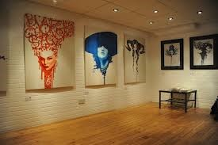
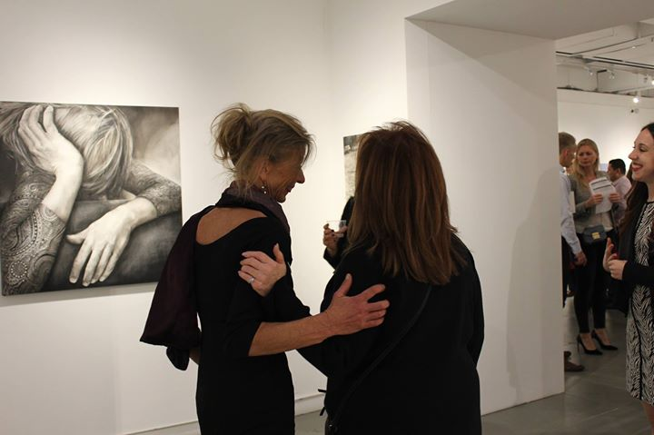

Carter Angelo Gallery 
Carter Angelo Gallery 
This video is a timelapse of a watercolour painting from one of our featured artist, Sharon Freeman.
This video is to show to process of how a painitng is created, and the techniques that Sharon uses as well as some of the other artists may use as well.
This painting was done in Sharons home town of Oxford, the painting took around a day to start and complete, Sharon is known for her persistents of completing a painting once started and rarley leaves a painting incomplete which is admired by the other artists featured within the gallery.
This is an interactive map for the location of our gallery.
For easy usage click on the directions link and find your way to the gallery to see our unique artwork!
St. Georges Ave,
Northampton
NN2 6JD
Tel: 01604 745771
Call us to plan your vist or meet with the artists!
Gallery Hours:Tuesday - Saturday 11am - 6pm
The Angelo Art Gallerys collection of paintings spans more than 60 years and styles range from classic to modern. We also hold an exhibition of an up and coming local artist each and every month. Thanks to the budding young talent in our local area these events are always popular. No ticket required just arrive on the day. The building that houses the gallery opened its doors to the public in 1996 for the Northamptonshire Fine Art Exhibition inspired by the Great Exhibition in London of 1851. In 1996 it became the Angelo Art Gallery. The Angelo Art Gallery holds the largest collection of work by local talent, showing many of these paintings and sketches alongside loans from other larger galleries.
Parking Information: Street parking is avalible as well as a vistor car park around the back.

Thursday December 7, 2017 6-8 PM
Experience the lively, enthusiastic atmosphere of an opening night at Cater Angelo Gallery when artists, collectors, art lovers, media professionals, and diverse members of the art world gather to admire and appreciate the works on display.
20 October 2017 until 15 April 2018
Exhibiton of Mark Simons work, an amazing modern yet traditonal style of landscape paintings. Featured in the frount of the Gallery, with Mark himself answering any questions you may have!
For Northampton Borough Council Upcoming Events and Exhibition Page Click here!
October 20th 2017
With so much wonderful fine art to show, no exhibition can last forever. Our previous exhibition may be over, but you can still vist our next one or find the piece you fell in love with and buy online!
